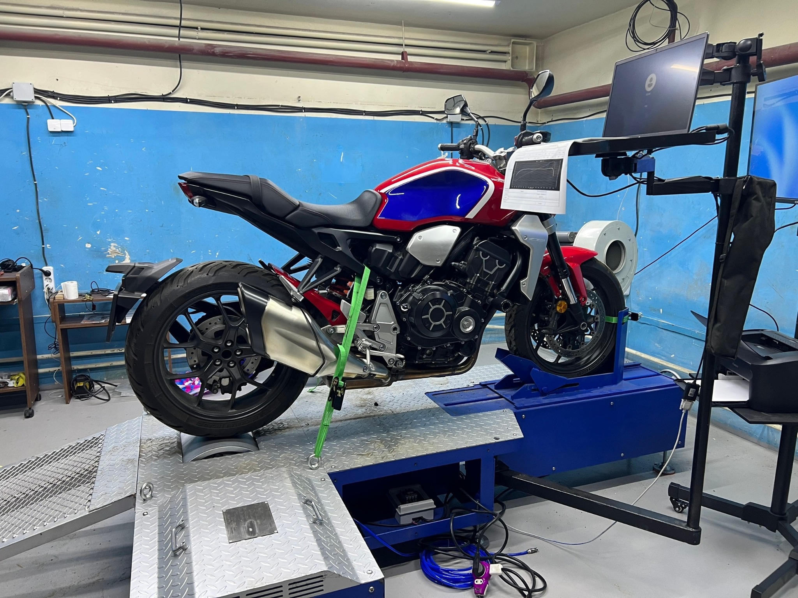
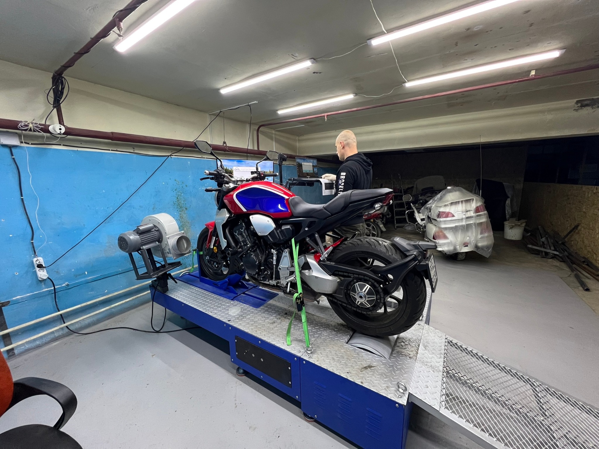
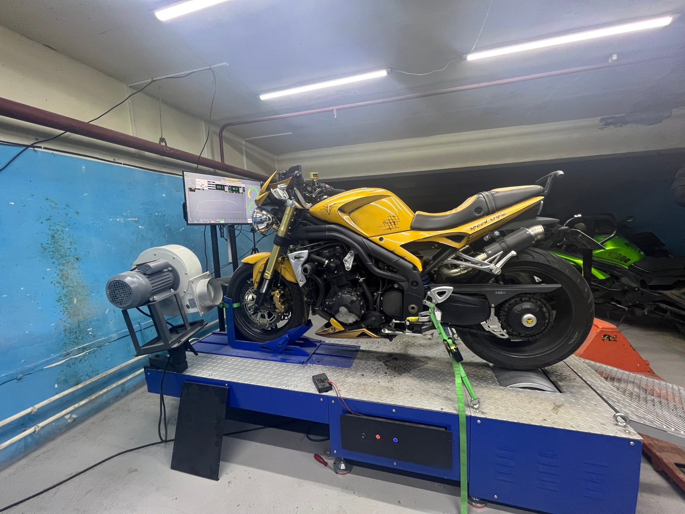
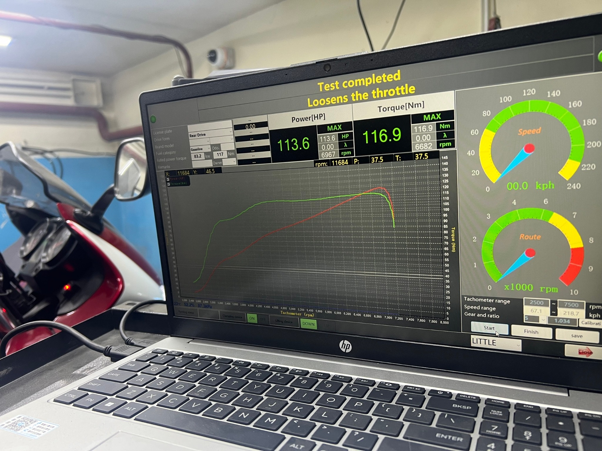
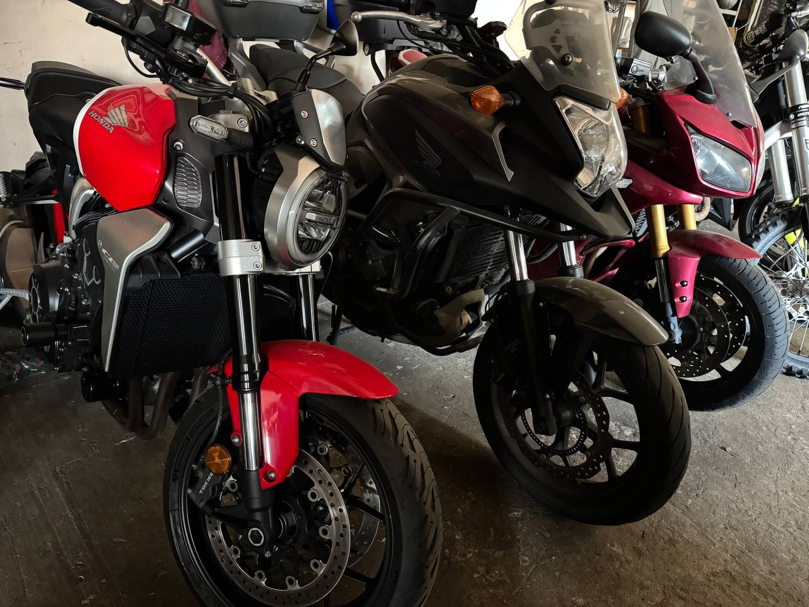
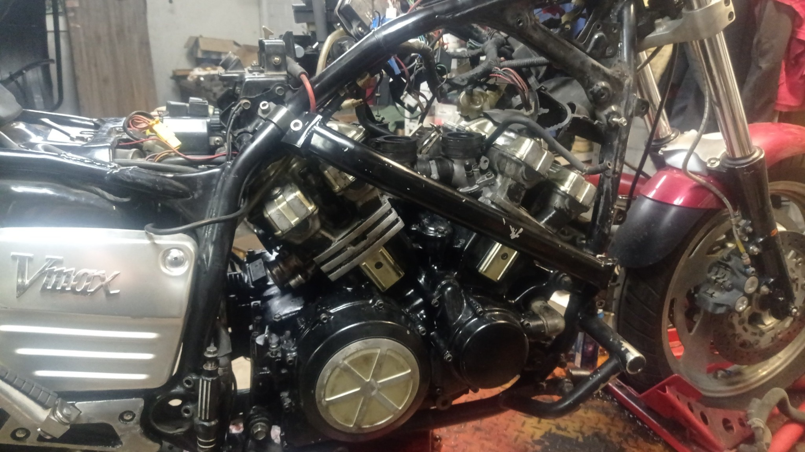
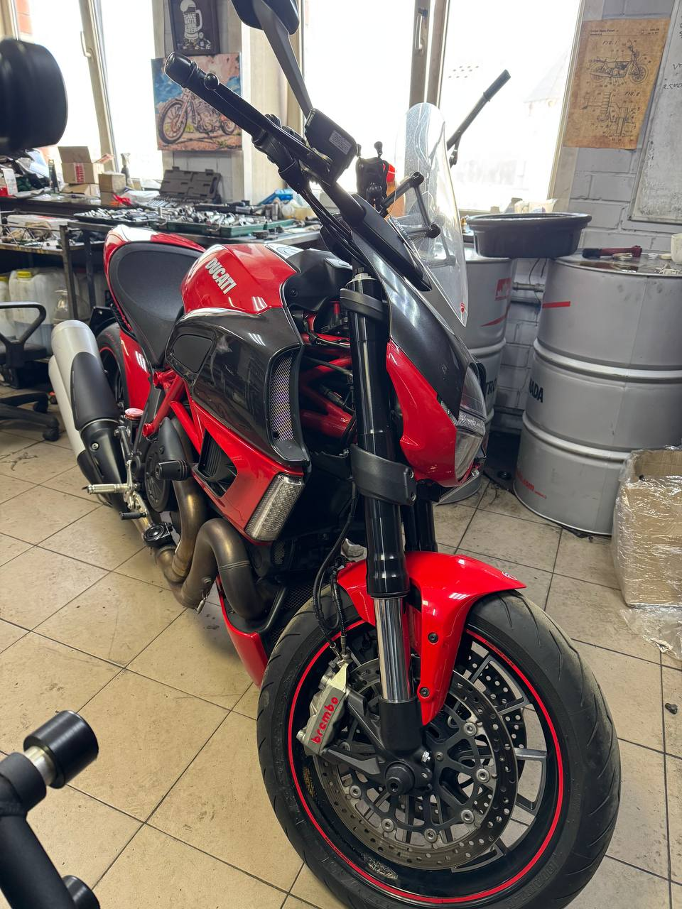
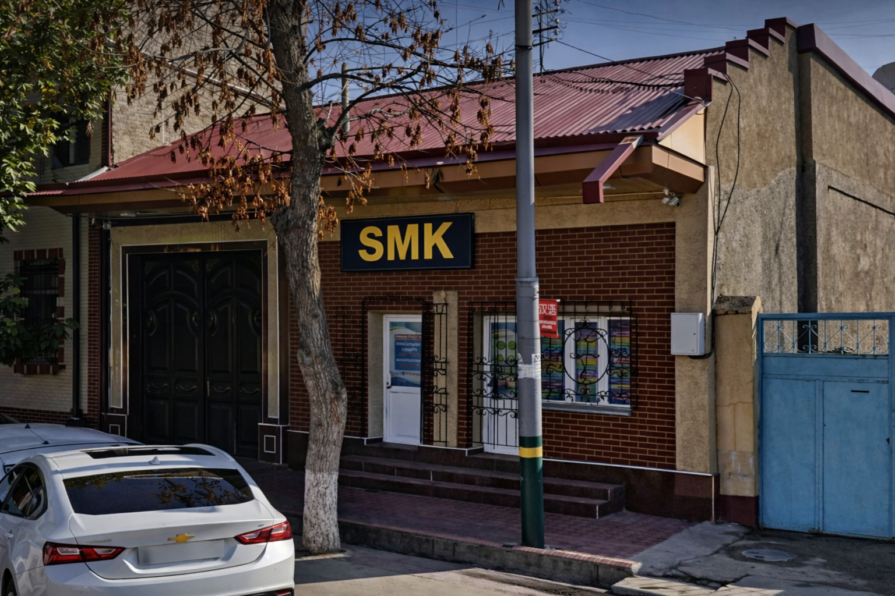

Workshop & Dyno Gallery
Real workshop photos, dyno runs, and current motorcycle projects.









Independent workshop in Samarkand focused on dyno testing, performance diagnostics, and ECU calibration for modern sport, naked, touring, and custom motorcycles.
We are an independent motorcycle workshop based in Samarkand. Our work combines mechanical expertise, dyno testing, and performance-focused diagnostics to deliver reliable real-world results.
Focused on motorcycles, practical engineering, and performance-oriented service.
Power runs, baseline checks, and measured validation after modifications.
Air-fuel analysis as part of a consistent dyno workflow.
Currently expanding professional ECU calibration and flashing capabilities.
Practical performance services for riders who want numbers, not guesses.
Measure horsepower and torque, compare before/after, and verify real output.
Detect fueling, response, and delivery issues under load.
Calibration workflow prepared for efficient AFR-based tuning sessions.
Professional setup for modern ECU tuning across selected motorcycle platforms.
Real workshop photos, dyno runs, and current motorcycle projects.







Workshop based in Samarkand, Uzbekistan. Professional motorcycle dyno testing and ECU tuning services.
